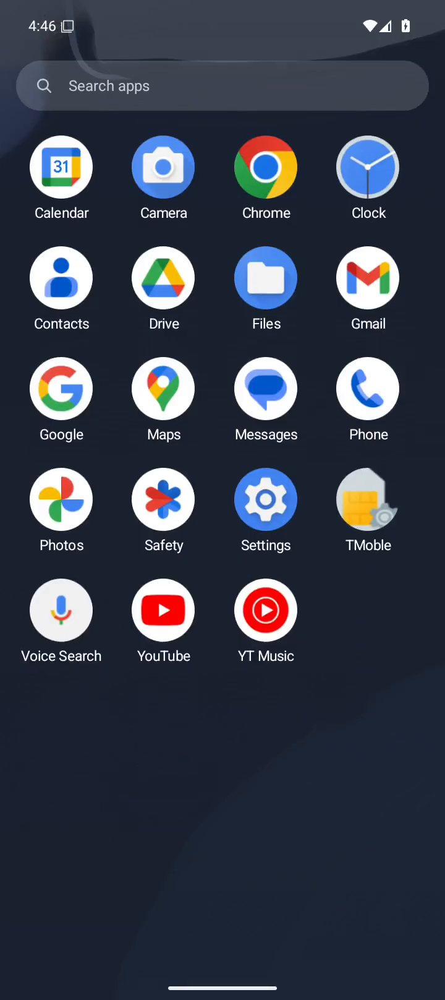
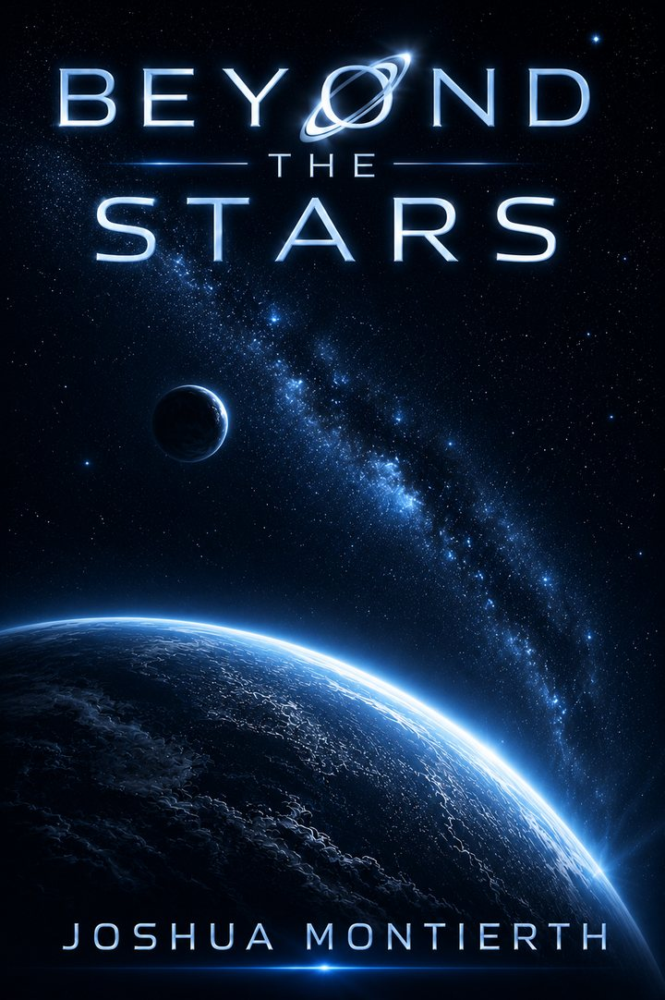

I am a creator and am driven by a wide range of hobbies and interests. I have a passion for using my engineering background to solve everyday problems.
I love turning ideas into tangible creations. Whether it’s woodworking, 3D printing, or a software project, I’m all in. As an Autodesk Inventor Certified Professional, I bring my designs to life through 3D modeling, 3D printing, CNC machining, laser cutting, and software development. I also enjoy creating art through music and prose and finding ways to bring engineering into my creative pursuits.
Personal projects
PenPlot Studio
Turns a Bambu Lab 3D printer into a precision 2D plotter.
I use my 3D printer every day, and I’ve always wanted to use it as a pen plotter or precision paper and vinyl cutter. While hardware attachments existed, the software to design artwork and convert it into machine-ready, proprietary Bambu Lab G-code was underdeveloped. To fill that gap, I created PenPlot Studio, a design tool inspired by Inkscape and 3D-printing slicers that understands the printer’s geometry and attached tools to generate safe, optimized toolpaths without firmware modifications.
PenPlot Studio converts SVGs, images, custom fonts, and handwritten drawings into G-code for plotting and cutting. It includes freehand drawing, image tracing, generative patterns, custom handwriting fonts, and automatic pen changes, with support for Bambu Lab and Marlin-based printers. I also built a simulated printer that previews each job and checks generated commands for unsafe movements before the G-code can be downloaded.
PlottingMy printer drawing a mandala from PenPlot Studio’s G-code.
SimulationThe preview replays the G-code for a three-pen spirograph at 25× speed and checks it for unsafe moves.
Recipes and shopping lists in one app, augmented with AI.
I wanted one app to keep track of my recipes and my shopping lists, because having both in one place is so convenient: pick a few recipes for the week, and their ingredients land on the right store’s list. The tedious part is getting everything into the app in the first place, so I integrated AI models to bridge that gap.
Photograph a recipe card or cookbook page, or paste a link, and a self-hosted vision model reads it into a clean recipe, with each ingredient’s amount, unit, and usual store already filled in. Photograph a handwritten list, and it fixes the spelling, expands shorthand like “EVOO,” and sorts every item onto the right store’s list. Everything syncs live across the household, and the Android app keeps working in a store with no signal.
One list per store, with each item tied to the recipe that needs it.
My Caesar dressing, read from a photo, with amounts and stores filled in.
A handwritten list, read and sorted onto each store’s list.
I play the piano, and turning the page means taking a hand off the keys. I wanted to turn pages hands-free, but at the time, there were only iOS apps available to do this. To fix this, I built Maestro, an Android sheet-music reader for a tablet on the music stand, inspired by forScore.
Maestro watches the front camera and turns the page when I turn my head, wink, smile, or hold a long blink. Face tracking runs entirely on the tablet, so no images leave it, and a hold time on every gesture, a long-blink threshold, and a cooldown after each turn keep it from turning in the middle of a passage.
The first page of Liszt’s Hungarian Rhapsody No. 2, with gesture control on.
Gesture mapping, sensitivity, and anti-misfire timing.
A live soundtrack that follows the mood of a conversation.
I wanted a live soundtrack for real life, so I built Mood Music. It listens to a conversation and generates original music that follows the mood as it changes, the way a film score follows a scene.
Whisper transcribes the speech as it’s spoken, and Gemma 4, running locally, reads the transcript, rates its mood, and acts as the director, choosing a style, instruments, and tempo to match. Google’s Magenta RealTime model turns those choices into continuous 48 kHz stereo audio on a GPU and streams it to any browser or media player.
The hard part was speed. Out of the box, Magenta RealTime took 47 ms to generate each frame, too slow to keep up with playback. A small patch I wrote changes how the KV cache updates, which brought the model under its real-time budget.
Three moods in 32 seconds
Press play and listen to the music follow the words.
0:00 / 0:32
Heard
Gemma 4 reads the mood
Positivity
Energy
Tension
and directs the music
John F. Kennedy, 1962: “We choose to go to the Moon in this decade and do the other things, not because they are easy, but because they are hard.” Gemma 4 chose cinematic neo-classical, staccato violins, french horn, timpani, and triumphant.
Franklin D. Roosevelt, 1941: “Yesterday, December 7th, 1941, a date which will live in infamy, the United States of America was suddenly and deliberately attacked by naval and air forces of the Empire of Japan.” Gemma 4 chose dark hybrid trailer, low brass, distorted cellos, heavy percussion, and ominous.
Lewis Carroll, Through the Looking-Glass: “Why, sometimes I’ve believed as many as six impossible things before breakfast.” Gemma 4 chose minimalist piano, soft cello, glockenspiel, whimsical, and light.
Condensed from a four-minute run on my server: each line was typed in, Gemma 4 read it and chose the music, and Magenta RealTime played it.
Chess Lab
Three chess variants in one app, with CPU, local, and online play.
Chess Lab is my exploration of adding additional rules to chess. I developed the idea for, built, and bundled all three variants in one game, as an Android app and Windows executable. It supports CPU opponents, two-player single device, LAN games, and online play via a dockerized container.
3D Chess
Chess inside an 8×8×8 cube, where each piece is defined by which axes it can move along, plus two new pieces, the prince and princess. I developed the neural network for 3D Chess because Stockfish couldn’t play it. Trained by self-play, it guides a search written for the cube, and its second generation beats the hand-tuned evaluation by 59 Elo over 400 games.
Blind Chess
Each player secretly arranges their army across their first two ranks. You see where every enemy piece stands but not what it is, so you deduce identities from how pieces move and tag your guesses. The computer plays fair on an adapted Stockfish: it tracks what each of your pieces could still be, samples complete boards that fit, and has Stockfish score each one.
Quantum Chess
A piece with exactly two legal moves can split into both squares at once, and its branches can split again. Moving through a split piece observes it and collapses it to one square, and a branch that lands on an enemy branch entangles the two until a measurement settles the capture. The computer adapts Stockfish by measuring the position into ordinary boards and having Stockfish judge each one.
Home Lab Setup
Self-hosted tools, files, and backups.
I love self-hosting, and I run a distributed network of machines to keep my photos, documents, and backups private, synchronized, and highly available. To manage the system, I developed a suite of custom dashboards and tools that give me visibility into network topology, service availability, open ports, transfer speeds, and overall system health.
Tailnet Console visualizes my network in real time, maps machines by measured latency, monitors service health, and supports automatic failover to a standby host in about 30 seconds. Syncthing Console tracks file synchronization across machines and maintains 35 days of history. Immich Dashboard transforms my self-hosted photo library into a rotating photo frame with live weather for TVs and wall-mounted tablets.
Tailnet ConsoleMachines placed by measured ping, with traffic streaming along each link, beside every service and its health.
Syncthing ConsoleThree machines and four shared folders, with a sync running live between two of them.
Immich DashboardThe forecast layout, with animated weather icons and the photo drifting slowly in a framed print.
A private, self-hosted search page with cited answers from a local model.
Avogadro is my custom, self-hosted metasearch engine designed for private browsing based on SearXNG. All requests stay on my own server, with a strict Content Security Policy blocking third-party connections. Images and icons are served through a proxy, and outbound links never pass my searches to the sites I visit.
Avogadro also uses a custom plugin I wrote for better results. It folds mobile, AMP, and duplicate copies of a page, and papers listed under the same DOI, into a single result, so the backend engines that found them pool their votes and the page ranks where it should.
When a query is phrased as a question, Avogadro generates a concise answer using Gemma 4 running locally (ether on a local server or on the device), with every sentence citing its sources. My server retrieves the top result pages and extracts passages relevant to the question. The moment you start typing, it beings loading the model, allowing for responses within 1s of making the search. The name Avogadro is a play on the idea of an enormous number, much like googol.
An Avogadro search with an AI assistant answer and curated search engine results.
I wanted to create my own custom news feed, from the sources I like and with no ads, algorithms, or tracking. Pulitzer is my news reader for about 140 of those sources, with a server, a web app, and an Android app, built on top FreshRSS, which I host myself.
Each of the roughly 560 stories a day becomes a card with its image, source, opening lines, and a short summary, either the publisher’s own or one written by Gemma 4, running locally rather than in the cloud. My server fetches and caches every article and image itself, so no page ever makes a third-party request, and the Android app keeps a full copy for offline reading. Read and saved stories stay in sync on every device, and the Android app updates itself from my server. It also includes cards for subscriped sports, markets, and weather.
The front page of Pulitzer with a story that opens beside the feed.
Particle
My Android home screen that puts it all together.
Now that I have my own news feed and search engine, it was time to get my own Andriod home launcher, Particle. It works like the traditional Andriod launchers, with pages of icons and widgets, a dock, folders, and an app tray, but its search bar searches with Avogadro, and the page to the left of home is Pulitzer, in place of Google’s Discover feed.
Particle talks only to my own servers. The weather under the clock comes from Pulitzer for the phone’s approximate location, and the Pulitzer page is cached, so it opens instantly and works offline.
HomeThe Pulitzer page, one swipe to the left, with the day’s weather, scores, and markets.

Apps and searchThe app tray, search with Avogadro’s suggestions, and a folder.
WordleBot
A Wordle solver that maximizes information gain.
I wrote WordleBot to solve Wordle by maximizing information gain. It evaluates each possible guess against the remaining answers, selecting the one that minimizes the expected number of candidates left. Cached decisions let it solve games in milliseconds.
I wrote Beyond the Stars, a space opera of about 80,000 words. Soon to be published on Kindle Direct Publishing.

School projects
I love learning. I’ve intentionally selected coursework and projects that complement and supplement my career as a wireless engineer. I believe having a broad education allows me to approach problems from unique angles and develop innovative solutions.
Training a language model from scratch
A 359-million-parameter chat model, trained from scratch on one GPU.
For my final project in BYU’s deep learning course (CS 474), I built the full pipeline behind modern chat models and trained it end to end from random weights. The model is a LLaMA-style decoder with 24 layers, 16 attention heads, rotary position embeddings, SwiGLU, and RMSNorm. I pre-trained it on 3.8 billion tokens of English Wikipedia and OpenWebText using a 50,000-token BPE tokenizer I trained myself, fine-tuned it on 52,000 Alpaca instructions, and aligned it with Direct Preference Optimization on 60,000 UltraFeedback preference pairs.
Everything ran on a single 20 GB RTX A4500 with bf16 mixed precision, torch.compile, and Flash Attention, and pre-training reached a validation loss of 2.80, a perplexity of about 16. I converted the final model to GGUF and served it through Ollama and Open WebUI.
A silicon photonic ring resonator
A narrowband optical filter.
In a course on quantum optics, I designed a photonic ring resonator, which I then fabricated and tested. It was manufactured on the SiEPIC open electron-beam lithography run in February 2026, on 220 nm silicon-on-insulator. The purpose of the project was to create a narrowbandwidth filter for optical signal processing, and test the manufacturing tolerances of the fabrication process to assess practical feasibility of the design.
The layout: three banks of add-drop ring resonators, fed through grating couplers. Scale bar 40 µm.
ABCD ray tracer
Interactive paraxial optics with ABCD matrices.
I built an interactive ray tracer for paraxial optics. Drag lenses, prisms, gratings, and mirrors onto an optical rail, tune their parameters, and watch rays propagate through each element’s ABCD matrix.
Try a two-lens version here: drag a lens along the rail to move it, or up and down to change its focal length.
Live: two thin lenses on an optical railThe system matrix M is the product of each element’s matrix, applied right to left in the order the light meets them. At the image, B is zero, so every ray from the arrow’s tip lands on one point, and A is the magnification.